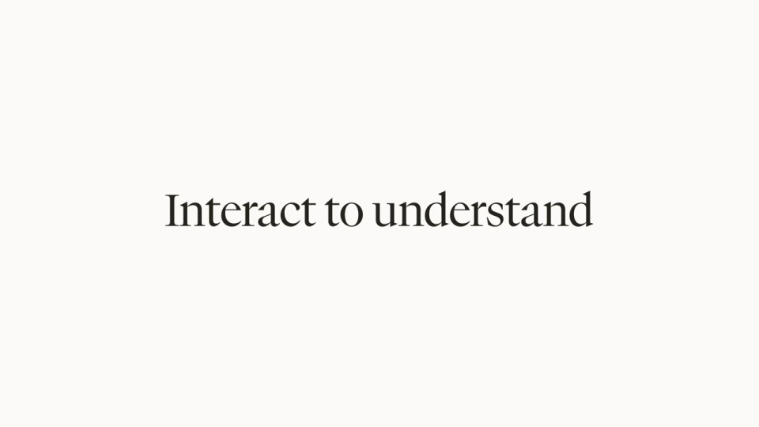
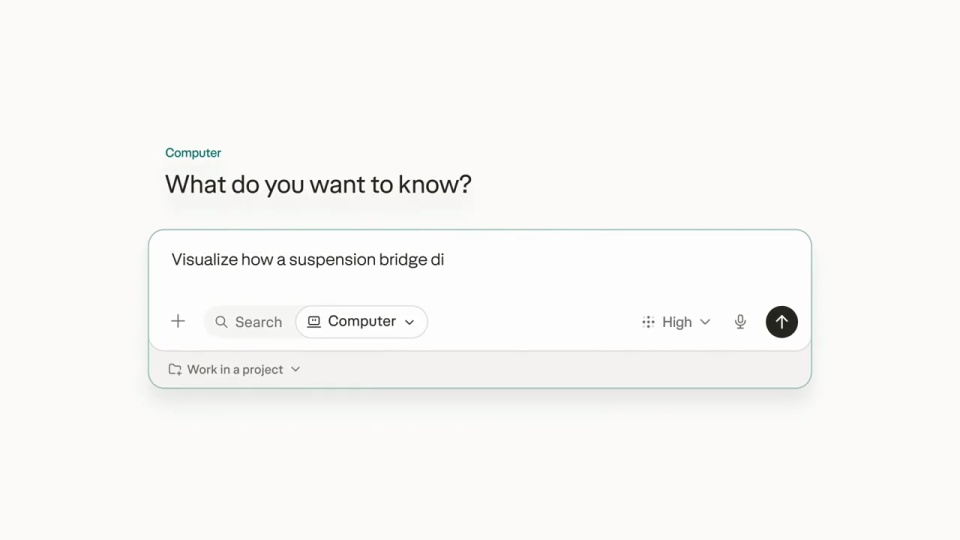
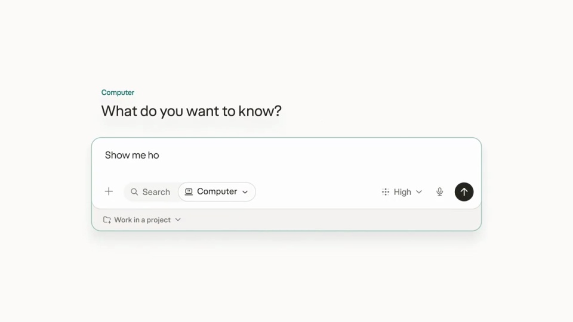
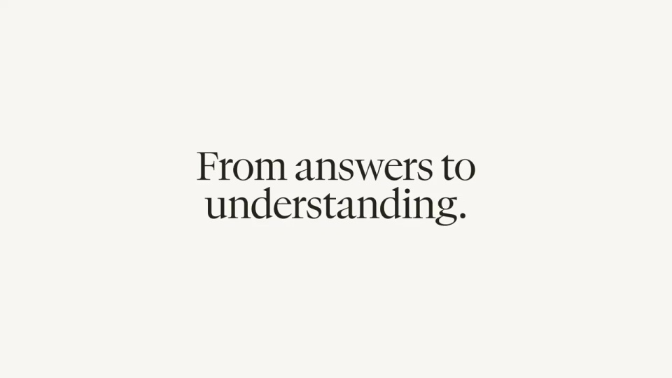

Perplexity / V080
Computer 能生成交互图表
用统一提问入口串起不同的可交互答案：问题负责设定任务，图表里的具体反馈负责证明答案可以继续探索。
构图与编排 可播放 · 可替换内容
整体编排规则示例
查看 HTML 源码
<!doctype html><html lang="zh-CN"><meta charset="utf-8"><meta name="viewport" content="width=device-width,initial-scale=1"><title>Computer 能生成交互图表 · sequence</title><style>html,body{margin:0;width:100%;height:100%;overflow:hidden;background:#fafaf7}canvas{display:block;width:100%;height:100%;object-fit:contain}</style><body data-mode="sequence"><canvas width="1000" height="600"></canvas><script src="data.js"></script><script src="common.js"></script><script src="scene.js"></script><script src="bridge.js"></script></body></html>画面元素输入框金融曲线指针提示科学模拟说明标题
MOTION LANGUAGE
动作与构图
局部动作 · 构图规则
01
同一入口，不同答案形态
先用金融问题建立操作方式，再切入科学问题。输入区域的尺寸、对齐和按钮位置保持一致；输出从曲线换成模拟图时，留一段简短主张作为转场。
02
曲线响应指针，而不只是出现
曲线响应指针，而不只是出现规则示例
查看 HTML 源码
<!doctype html><html lang="zh-CN"><meta charset="utf-8"><meta name="viewport" content="width=device-width,initial-scale=1"><title>Computer 能生成交互图表 · sequence</title><style>html,body{margin:0;width:100%;height:100%;overflow:hidden;background:#fafaf7}canvas{display:block;width:100%;height:100%;object-fit:contain}</style><body data-mode="clip" data-start="16" data-end="27"><canvas width="1000" height="600"></canvas><script src="data.js"></script><script src="common.js"></script><script src="scene.js"></script><script src="bridge.js"></script></body></html>曲线先进入，指针随后选择具体位置；提示、读数或辅助线与命中点同步更新。图表坐标和标题固定，反馈只发生在被操作的数据位置。
03
科学图解展示参数如何影响结果
科学图解展示参数如何影响结果规则示例
查看 HTML 源码
<!doctype html><html lang="zh-CN"><meta charset="utf-8"><meta name="viewport" content="width=device-width,initial-scale=1"><title>Computer 能生成交互图表 · sequence</title><style>html,body{margin:0;width:100%;height:100%;overflow:hidden;background:#fafaf7}canvas{display:block;width:100%;height:100%;object-fit:contain}</style><body data-mode="clip" data-start="43" data-end="54"><canvas width="1000" height="600"></canvas><script src="data.js"></script><script src="common.js"></script><script src="scene.js"></script><script src="bridge.js"></script></body></html>把天体位置、运动关系和说明分层绘制。改变参数后立即更新相关对象，仍保留参照物，使观众能比较前后差异；无关对象不跟着一起移动。
04
保留轻量工具的阅读感
浅暖背景、深色文字和青绿色强调色贯穿两类答案。衬线标题放在主张页，图表轴标与控件使用清楚的无衬线字；主图居中，辅助说明靠近对应数据。
05
把问题与交互成对替换
改主题时先写一个能操作的问题，再选择合适答案形式。趋势用曲线，空间关系用示意图，分类对比用表格；标题、单位、数值和操作反馈须一起更新。
SEQUENCE
段落与节奏
点击段落，定位到上方编排示意。




画面参考 · 离散静帧
KEEP THE RELATIONSHIPS
制作其他主题
- 可替换金融指标和科学主题；必须提供与问题相关的交互反馈。
- 曲线值为示意数据，迁移时不能当原始金融数据使用。
制作约束
输入框 / 金融曲线 / 指针提示 / 科学模拟 / 说明标题
- 结果包含可操作图表；指针进入后数据提示响应，不能只让图表整体缩放。
- 三类问题保留统一请求入口，结果视觉类型分别变化。